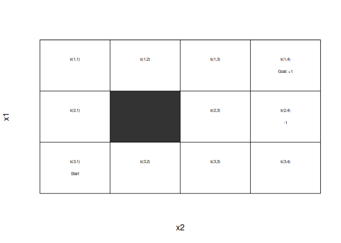
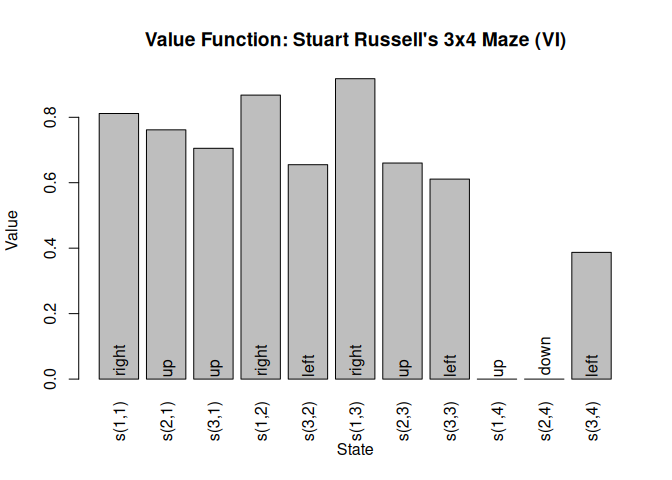
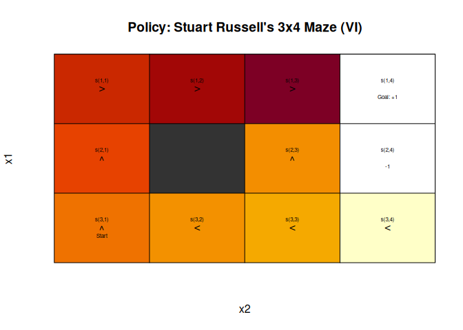

Maintainer: Michael Hahsler
Notice of development status
This package is under development and has not been released on CRAN. Expect some API changes.
An similar educational Python package is gym_classics2.
Introduction
A Markov decision process (MDP) (Bellman 1957; Howard 1960) is a discrete-time stochastic control process. In each time step, an agent can perform actions which affect the system (i.e., may cause the system state to change). The agent’s goal is to maximize its expected future rewards that depend on the sequence of system state and the agent’s actions in the future. Solving the MDP means finding the optimal (or at least a good) policy that guides the agent’s actions.
The markovDP package provides the infrastructure to work with MDPs in R. The focus is on convenience in formulating MDPs with small to medium sized state spaces in multiple ways, the support of sparse representations (using sparse matrices, lists and data.frames) and visualization of results. Some key components are implemented in C++ to speed up computation. The package provides the following popular tabular methods:
-
Dynamic Programming
- Value Iteration (Bellman 1957)
- Modified Policy Iteration (Howard 1960; Puterman and Shin 1978)
- Prioritized Sweeping (Moore and Atkeson 1993; Andre et al. 1997; Li and Littman 2008)
-
Linear Programming
- Primal Formulation (Manne 1960)
-
Monte Carlo Control
- Monte Carlo Control with Exploring Starts (Sutton and Barto 2018)
- On-policy Monte Carlo Control (Sutton and Barto 2018)
- Off-policy Monte Carlo Control (Sutton and Barto 2018)
-
Sampling
- Random-sample one-step tabular Q-planning (Sutton and Barto 2018)
-
Tabular Termporal Differencing
- Q-Learning (Watkins and Dayan 1992)
- 1-step Sarsa (Rummery and Niranjan 1994)
- Expected Sarsa (Sutton and Barto 2018)
- n-step Sarsa (Sutton and Barto 2018)
- Sarsa(lamba) (Sutton and Barto 2018)
- Watkins’s Q(lamba) (Sutton and Barto 2018)
-
Temporal Differencing with Function Approximation
- 1-step Sarsa (Sutton and Barto 2018; Geramifard et al. 2013)
- Sarsa(lambda) (Sutton and Barto 2018)
- GTD(lambda) (Sutton and Barto 2018)
These implementations follow the description is (Russell and Norvig 2020) and (Sutton and Barto 2018). The implementations represent the state space explicitly, so only problems with small to medium state spaces can be used.
Partially observable Markov Decision Problems (POMDPs) can me modeled in a similar fashion using package pomdp (Hahsler 2024).
Installation
Current development version: Install from r-universe.
install.packages("markovDP",
repos = c("https://mhahsler.r-universe.dev",
"https://cloud.r-project.org/"))Usage
Solving the simple maze from (Russell and Norvig 2020).
library("markovDP")
data("Maze")
Maze## MDPModel, MDP - Stuart Russell's 3x4 Maze
## Discount factor: 1
## Horizon: Inf epochs
## Size: 4 actions / 11 states
## Storage: transition prob as matrix / reward as matrix. Total size: 28.8 Kb
## Start: s(3,1)
## Model list components: 'name', 'discount', 'horizon', 'states',
## 'actions', 'start', 'transition_model', 'reward', 'info',
## 'absorbing_states'The maze is a gridworld and can be displayed directly.
gw_plot(Maze, state = TRUE)
sol <- solve_MDP(model = Maze)
sol## MDPModel, MDP - Stuart Russell's 3x4 Maze
## Discount factor: 1
## Horizon: Inf epochs
## Size: 4 actions / 11 states
## Storage: transition prob as matrix / reward as matrix. Total size: 32.3 Kb
## Start: s(3,1)
## Model list components: 'name', 'discount', 'horizon', 'states',
## 'actions', 'start', 'transition_model', 'reward', 'info',
## 'absorbing_states', 'solution'
##
## Solved:
## Method: 'VI'
## Solution converged: TRUE
## Solution list components: 'method', 'policy', 'converged', 'delta',
## 'iterations'Display the value function.
plot_value_function(sol)
The state values can be shown in the gridworld as colored map.
gw_plot(sol)
Acknowledgments
Development of this package was supported in part by National Institute of Standards and Technology (NIST) under grant number 60NANB17D180.
Citation request
To cite package ‘markovDP’ in publications use:
Hahsler M (????). markovDP: Infrastructure for Discrete-Time Markov Decision Processes (MDP). R package version 0.99.0, https://github.com/mhahsler/markovDP.